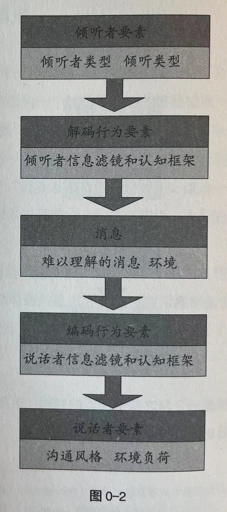

序 倾听的艺术
VIIII
在他人心目中，我是一个谈话高手。事实上，我只是善于倾听，愿意听他们吐露自己的心声。
——戴尔·卡内基
倾听的艺术
要想与他人和谐相处，就要学会倾听
XI 事实是，沟通能够创造人与人之间的联系，也能毁掉一段关系。
倾听和听见的区别 XII 倾听不仅包括听见，还包括理解。倾听是一项参与性活动，有效倾听需要你的积极参与和互动。倾听需要你集中注意力并增强意识，这样你才会理解你所听到的病赋予意义。
电话游戏模式 XVIII 所有沟通都包含五个要素：说话者、编码行为、消息、解码行为和倾听者。
倾听过程是一个与之完全相反的过程，下面本书的安排顺序。
XX
XXI
谈话的艺术在于倾听。
——马尔科姆·福布斯
第一部分 倾听者要素
第1章 倾听者的认知框架和信息滤镜
认知框架 5 我们听到的事情和说话者想要表达的意思之间之所以存在如此大的差异，原因在于一个名为"认知框架"的因素。
认知框架的概念由来已久。1955年，研究人员格雷戈里·贝特森指出，话语本身"不存在内在含义，只有在语境和语体构成的框架内才能够获得意义"。
6 从儿时和父母、和周围人的第一次互动开始，我们就一直在获得各种认知框架。
认知框架是你对某个情境或话题的大概了解。
. 本质上，认知框架是对特定环境的"宏观"看法。这就好像你的大脑正通过镜头观察事物，但却完全没有自觉。一些事物留在了镜头里，而另一些被挡在了镜头外。倾听者只能听到或者说接收到进入框架内的事物。影响我们框架的因素有很多，如性别、教育背景、猜测、个人意念、效能感以及和他人的关系等。我们过往的经验、学习和观察到的事物，这一切构成了我们的框架。
7 问题是，我们的框架通常是无意识的，这意味着我们很多时候并不知道我们的经验是如何塑造我们的感知的。
认知框架带来的偏见 8 认知框架虽然潜藏在意识之下，但也会导致偏见。在社交媒体上，这种现象随处可见。
. 不管哪种情况，人们的框架都对他们的想法产生了影响，同时也影响了他们对事件的解释。
9 你是否也有过这样的经历——听说了某件事，不由自主地进行了解释，但后来得到的信息与你所想的大相径庭？例如，你听见你的爱人在小声打电话，商量见面的细节。你依据自己的框架判断，你的爱人正计划和情人约会。但如果你还记得一周后自己过生日，那你的认知框架就会发生转变，你可能会觉得，你的爱人正为你准备惊喜。
11 如果你和母亲之间关系紧张，那么当她问了"你吃饭了吗？"时，你很可能会把这句话看作一个批评。如果你的恋人问你这句话，你则会把它视作一种邀请。同一句话，可以有完全不同的解释。
如果你和某人经常往来，那么你们之间就会形成一个框架，通过这个框架，你可以看到你和这个人之间的所有互动。
信息滤镜 12 认知框架是对一个情景的"大局"观，而信息滤镜是一个有意识的选择过程——让你把注意力集中在某件事上，而不是其他事上。就像摄影一样，框架决定透过摄像机镜头所能看到的内容，而滤镜则决定镜头选择关注的焦点——哪些地方需要锐化，哪些地方需要虚化，哪里明，哪里暗。
滤镜能够改变我们接收他人信息的方式。必须注意的是，滤镜无所谓好坏，它只是一种管理我们大脑中输入信息的方法。
13 显然，两人都没有错。海景很美，窗户很脏，这都是事实。但，就在两人互动的这一刻，可能他们都会选择后退一步，从对方的框架和滤镜角度看问题，也可能他们的矛盾会升级，发展成一场争吵。
15
有效倾听源于你对自己的认知框架和信息滤镜的理解，同时你也需要知道，他们对你接收他人的消息带来哪些影响。
情绪管理 . 在倾听他人诉说时，想要确定我们自己以及他人的信息滤镜，我们就必须学会控制情绪。如果某人和你拥有相同的框架和滤镜，那么你就很容易理解他说的话。但，如果你的交谈对象和你拥有完全不同的世界观，那么你们之间的交谈就会变得越来越难。
16 冲突研究专家罗杰·菲舍尔和威廉·尤里在他们的经典著作《谈判力》（Getting to Yes）一书中，介绍了在冲突中管理情绪的一些技巧。强烈情绪反应既是冲突的原因，也是冲突的后果。冲突中，人们可能会产生各种负面情绪——愤怒、怀疑、失望、沮丧、困惑或恐惧。
第2章 七类倾听者
21
交朋友时，自己主动还是对方主动，结果截然不同—前者两个月内结交的朋友比后者两年内结交的还要多。
——戴尔·卡内基
24
- 忧心者
- 神游者
- 打岔者
- 默然者
- 好斗者
- 分析者
- 投入者
前六类的亲听着的倾听效果明显不如最后一类。
26 好斗者
. 这类倾听者通常心怀敌意、态度粗鲁，他们倾听不是为了理解你所说的内容，而是为了找到反对你、攻击你的武器。他们全副武装，随时准备战斗；他们很喜欢反驳和指责他人。
分析者
这类倾听者乐于扮演顾问或者治疗师的角色，随时准备给你提供一些无根据的答案。他们自认为是优秀的倾听者，而且乐于助人。他们往往处于这样一种模式：不管你说什么，都能帮你分析分析，然后提出解决方案。
27 投入者
. 这类倾听者会有意识地倾听。在倾听时，他们会用他们的眼睛、耳朵甚至心，认真倾听，并站在说话者的角度理解问题。这是最高水平的倾听。他们拥有高超的倾听技巧，不仅能鼓励你继续发言，还能引导你找到自己的解决方案，并让你的想法得以展现。
没有人能每时每刻都保持全身心投入倾听。
现在，你可以听我说话了吗 29 好斗者
如果你正在和一个好斗者交谈，当他提出反对意见或者指责你时，你不要和他争论，往前看，不要向后看。可以各自保留不同意见，或者在下次谈话时再提出不同的解决办法。
分析者
如果你正在和一个分析者交流，你可以先说："我只想和你说点事，我不需要任何建议。"
投入者
如果你正在和一个投入者交谈，花些时间感谢他对谈话的专注，谢谢他能够对你们之间的话题感兴趣。
你是哪类倾听者 32
好斗者
如果你是一个争强好胜的人，那么你要努力站在讲话人的立场看问题，理解、接受对方的观点，并找出其中的优点。
分析者
如果你是一个分析者，放轻松，你要明白，不是每个人都需要答案、解决办法或者建议。有些人只是喜欢和他人聊聊，因为这些有助于他们自己寻找答案。
投入者
如果你现在已经是一个投入者，那么请继续保持，因为大家很欣赏你的这个优点。
第3章 四大倾类型
34
很多人倾听不是为了理解对方，而是为了回答问题。
——史蒂芬·R·柯维
一个深陷婚姻危机的男人向大师求助，大师说："你必须学会倾听你的妻子。"
这个男人牢牢记住了这句话，一个月后，他再次拜访大师时说，自己已经学会倾听妻子说的每个字。
这次大师微笑着对他说："现在回家，听听她没有说出来的每个字。"
假装式倾听 37 当厌烦了或者不想听对方说的话时，人们往往就会陷入这种倾听模式。在有些情况下，"我不想听你说"这样的话是不可接受的。比如，父母和孩子之间的交流——很多时候孩子没有权力说"不"。
假装式倾听，即看起来在认真听，但实际上，可能在做白日梦，或者在想其他事情。
应对式倾听 38
应对式倾听，即为了解释或者捍卫自己的立场而倾听对方。
学习式倾听 40
学习式倾听，即只听想听的内容，并选择性地过滤掉其余内容。
共情式倾听 42
共情式倾听的目的是试图全方位理解对方。
第二部分 说话者要素
第4章 说话者的认知框架和信息滤镜
51
准确理解词汇很重要，因为它们的思想价值构建并塑造了我们了解事物的方式。
——迈可纳·内史密斯
说话者的认知框架会误导倾听者 56 在一个框架中，人们看到的是候选人积极正面的形象；而在另一个框架中，候选人去给人留下了消极的印象。同一个候选人，不同的形象，关键取决于信息的呈现方式。
57
具有相似背景（性别、教育背景、年龄、国籍等）的人往往对事物有相似的认知框架。
沟通三明治 . 说话者和倾听者之间既存在相似性，又存在差别。
59 问题在于，针对不同的员工，唐没有找到与之相应的沟通风格。唐的沟通风格直接了当（这可能与他的性别、背景个人风格有关），但玛丽的沟通属于间接风格，因此唐与她沟通时用错了风格。
60 如果在和玛丽交流时，唐使用了"沟通三明治"——赞美、批评、再赞美，就像他对麦克做的那样，那么，玛丽就可以理解他的要求，并且接受他的批评。
同样，因为迈克和唐一样，都属于直接沟通风格的人，因此唐和迈克沟通时应该直击问题核心，就像上文中和玛丽沟通时一样，直说："我需要这样的改动，这个时间前必须交上来。"
如何倾听认知框架 . 有一点可以肯定的是，需努力确定影响说话者方式的认知框架和其他因素。
ACES决策术 62 ACES是四个单词的缩写，分别为"Assumptions"（意为假设）、"Criteria"（意为标准）、"Evoked Set"（意为激活域）和"Search"（意为搜索）。
. 若想使用ACES决策术，你只需要拿出几张纸，在左边写下你当前的认知框架（你当期的假设、标准和激活域），然后执行如下过程——提出相反的假设和标准，然后添加到激活域。
. 在搜索一页上，你将得到一个项目列表，进而获得更多信息。在执行这个过程时，你需要问自己："在什么情况下，和我假设相反的情况会成立？"
63 但是，思考"在什么情况下相反的假设会成立"，有助于倾听者重新理解当时的情况。
. 如果你积极确认自己的认知框架，并审慎思考自己对他人做出的假设，那么你就会更容易理解说话者的意图、明白他的方式。
从图4-1可以看出，想要进行有效沟通，说话者和倾听者的认知框架和信息滤镜需要保持一致。
第5章 编码要素
65
沟通中最大的一个问题就是容易出现误解。
——乔治·伯纳德·萧
编码消息 66 编码是指信息以代表想法或概念的符号形式转化成消息。符号具有多种呈现方式，例如话语或肢体动作。
67 在编码消息时，说话者所使用的符号应该是倾听者所熟悉的，这一点很重要。
. 对于说话者来讲，编码消息时最好能够想象一下倾听者的立场。
68 成功编码消息取决于两个方面，一方面是简单明了传递信息的能力，一方面是你预测并消除干扰信息源（例如，文化问题、错误假设和信息缺失）的能力。成功编码的关键是了解听众。
如果你不了解你的沟通对象，那么你所传递的消息就很容易被误解。
关系的重要性 71 同样一条消息，面对的人不同，说话者编码时所采用的措辞、语气和情绪都会不同。
个体差异
. 当二联体（特制由两部分构成的事物）中一方对彼此之间的关系有了不同期待时，事情就会变得很有挑战性。
环境因素 73 环境负荷
"环境负荷"是一个专业术语，指一个人所承受的压力负荷，它专指直接环境汇总会给一个人带来压力的任何事物。我们知道，当一个人疲惫、饥饿、生病或者烦躁时，与之进行的沟通就会收到压力的影响。负荷因素包括：时间压力、不确定性、复杂性、对重要事情结果的预期（无论好坏）。
随着一个环境负荷的增加，他所需要的信息量和想要分享的信息都会发生变化。在高压环境下，有人会变得非常果断，只需要基本信息。而有人面对压力时则会"呆住不动"，希望了解所有可能的选择。你可以想象一下，当说话者和倾听者处于不同沟通风格时，会发生什么。
令人愤怒的是消息，而不是消息的传递着 74 该项研究指出对于家属而言，消息传递者最重要的四个品质（按重要性排序）：
- 消息传递者的态度。
- 消息的清晰度。
- 隐私。
- 解答疑问的能力。
75 消息传递者的态度是由他的认知框架和信息滤镜决定的；消息清晰度则和我们讨论的编码因素息息相关。隐私即我们谈论的环境因素。和解答疑问的能力相关的是沟通风格的差异。
.
坏消息不是红酒，它不会越放越好。
科林·鲍威尔
第6章 沟通风格差异
77
"信息"（information）和"沟通"（communication）这两个词经常互换使用，但实际它们完全不同，信息需要对外发布，而沟通则需要与人接通。
——西尼·哈里斯
78 如果说话者和倾听者互相不理解，它们之间就没法沟通。
决策风格 79 该模型最初由迈克尔·J·得赖弗提出，后来德赖弗又和肯尼斯·布鲁索一起对这个模型做了进一步完善，并将其命名为"德赖弗决策风格模型"。该模型探究了人们是如何根据两个维度做决策的。这两个维度分别为：决策时所需信息的数量、决策时考虑到的备选方案的数量。
信息使用
使用信息量少的那些人，我们称为"易满足者"。"易满足"一词意味着只需要几条信息就可以得出一个"足够好的"决策。
和易满足者相对的称为"最大化者"。后者在做决定前，会考虑很多信息。
德赖弗和布鲁索指出："易满足者知道还有更多的信息需要考虑，但他们急于把事情做完。相对于把事情分析透彻，他们更乐于不停地做事。"另一个极端就是最大化者。最大化者会确定自己考虑了所有的相关事实，没有错过任何重要细节，不管那细节是多么细微。他们的兴趣在于想出一个高质量的解决方案，或者学习新鲜的、重要的事物。
81 焦点
在谈到注意力时，人们通常有两种倾向。一种人属于"单焦点者"，他们会把精力集中在得出一个最佳解决方案上。另一种人属于"多焦点者"，在他们眼中，不同的解决方案或者选择都具有同等的吸引力。
82 德赖弗和布鲁索指出：
单焦点类型的决策者往往对事情应该如何做，态度十分明确。面对任何情境，他们心中通常都只有一个具体标准，例如价格、质量、公平程度，根据这些标准，他们会评估所有潜在的可能性。因此，他们一般会根据自己的标准或者目标，找到最佳答案。
而多焦点类型的决策者会根据多个标准评估潜在的解决方案。他们往往有很多标准。于是，某个解决方案可能符合其中某些标准，而另一个行动可能更适合其他标准。相应得，在思考时，他们更易于接受多种选择、考虑更多条件。这种带有条件性的思考方式往往会惹怒单焦点者。对单焦点者而言，多焦点者思维混乱、优柔寡断、没有价值观，有人甚至会觉得多焦点者"不靠谱"。而在多焦点眼中，想法明确、观点集中的单焦点者顽固、狭隘、死板、教条。这还是客气的说法，一旦彼此发生冲突，多焦点者有更尖锐的词汇来描述单焦点者。
83 四类决策风格
- 单焦点最大化者 : 这类人在做决定前会收集大量信息，并进行分析，做决定时小心谨慎。他们希望找到一个最佳问题解决方案。这类人属于 层级性决策风格 。
- 多焦点最大化者 : 这类人会收集大量信息，并乐于考虑多种选择。对他们来书，做决策是一个过程，不一定是为了寻找单一答案。这类人属于 综合型决策风格 。
- 单焦点易满足者 : 就某个行动，这类人会利用最少信息做出明确的决定，因此他们属于 果断型决策风格 。
- 多焦点易满足者 ：这类人思维活跃、反应灵敏，对任何一条信息，他们都可能给出不同的解释，赋予不同的意义。如果行动执行不顺，他们会迅速调整方向，因此他们属于 灵活型决策风格 。
角色风格和本色风格 85 在公共场合和私生活中，一个人的行为往往会不同。
. 我们称这两种不同的风格为"角色风格"和"本色风格"。
当人们意识到需要保持良好的形象，如面试、演讲或者相亲时，他们就会扮演合适该场景的角色。此时人们展现的角色不一定是他们的本色，只是他们认为在当下的场合应该展现的形象。
当一个人不太在意自己如何思考或举止时，他的本色就会显露出来。这才是这个人的真面目，而不是公众形象。
88
像智者一样思考，如常人一样交流。
——威廉·巴勒特·叶芝
第三部分 沟通为何失败
第7章 人际关系中的冲突
97
如果一个人知道自己经常误解别人，那么，在社交时，他一般不会说太多话。
——约翰·沃尔夫冈·冯·歌德
混杂的消息 100
人际冲突都源于两个人之间沟通不畅。
101 从图源于两个人对这条消息拥有的不同认知框架。
冲突阶段 102 1967年，研究员卢·庞迪提出了组织冲突模型，该模型确定了冲突的五个阶段：
- 潜伏阶段：有潜在冲突。
- 觉知阶段：冲突处于认知层面。冲突一方或者双方可能认识到了冲突的存在。
- 感觉阶段：冲突处于感觉层面——冲突双方开始感觉烦躁。
- 显性阶段：双方在行为上开始出现冲突——充满敌意、争吵，甚至发现肢体冲突。
- 冲突后果：冲突造成的影响。
其他的潜在冲突 104
两个人在以前交流中积累的问题越多，潜在冲突就越有可能转化为显性冲突。
解决冲突的三个阶段 . 汤姆·腊斯克博士在其著作《道德说服的力量》（The Power of Ethical Persuasion）中提出冲突的解决分为三个阶段，分别为：
105
阶段一：了解对方的看法。
阶段二：解释自己的观点。
阶段三：寻找解决方案。
阶段一：了解对方的看法
. 事实上，面对冲突，我们汇总很多人经常会犯的一个错误——我们花大量的时间努力让他人倾听我们的想法，却更不不关心对方是怎么想的。
想做到上述一点，就不得不再谈到认知框架以及认知框架的转换。你必须能够跳出自己的框架，去探索对方的框架。
关于如何了解对方的看法，腊斯克博士提出了七个步骤。
- 确定你当前的目标是相互理解，而不是解决问题。
- 引导对方说出他关于当前问题的想法、感受和渴望。
- 向对方寻求帮助，尝试了解。尽量不要为自己辩护或提出异议。
- 用自己的话重复对方的立场，确认自己是否理解了对方。
- 请对方纠正你的理解，重述对方的立场。
- 重回你的立场，继续。
- 重复前六个步骤，知道对方认为你理解了他的立场。
106
我们花大量的时间努力让他人倾听我们的想法，却根本不关心对方是怎么想的。
阶段二：解释自己的观点
. 如果你过早地解释你的看法，对方感觉不到自己被"倾听"，相应地，他也不会听你说。
107 解释自己的观点，一共分为五个步骤：
- 提出公平倾听的要求——我听你说，你也要听我说。
- 解释对方的想法和感受对你的影响。
- 认真解释你的想法、感受和渴望，强调这是你认为的"真相"，而不是唯一的"真相"。
- 必要的话，重述你的立场——纠正不符合事实的部分。
- 检讨各自的立场。
只有在你充分听取了别人的观点并建立了他们的框架之后，你才能专心解释自己的观点。
阶段三：寻找解决方案
108 当你们都在同一边专注于要解决的问题时，冲突就会减少。当然，这一切都要从倾听开始。
114
感受是各种关系的基础......难过的感受提供了你一个加深彼此关注的机会......关键是......你在处理这类情绪时要关心并尊重对方。
——汤姆·腊斯克博士
第8章 你的冲突类型是什么
115
对话是我们最强大的武器这一。
——纳尔逊·曼德拉（Nelson Mandela）
冲突类型的差异 118
- 狮子型：这种类型的人看中的是"获胜"而不是彼此之间的关系。他们把冲突看作一场竞争。"我知道，他们一旦看到我的观点，就会改变主意听我的。"这类人秉持的是"我赢你输"的立场。
- 鸵鸟型：这种类型的人为了避免冲突可以不惜一切。对他们来讲，冲突的存在才是问题。争论没有价值，因为它根本不会影响结果。"我宁愿忘记它。"这类人秉持的是"我输你也输"的立场。
- 犬型：这种类型的人把关系看得比什么都重要，为了维持关系，他们会迁就对方的要求。和狮子型的人完全相反。"好吧，按你说的做。"这类人秉持的是"你赢我输"的立场。
- 鱼型：这种类型的人就像一群鱼，重视团结合作。他们想要找出一种方法，让每个人都能够从中获益。这类人秉持的是"你赢我也赢"的立场。
- 变色龙型：这种类型不如上述四种常见。这种类型的人可以从上述的四种类型之一转向另一种，即为了和另一种类型的人交流，暂时调整自己的类型。
很多变量会影响一个人的冲突类型，进而影响一个人处理冲突的方法。虽然环境负荷，和他人的权力关系、文化差异等可能会对我们的冲突类型产生影响，但我们每个人在处理矛盾时，会有某种天生的倾向。
值得注意的是，冲突类型之间不存在优劣之分。看起来鱼型的人不错，因为这类人希望双赢。但在某些场合，协作实现双赢可能并不是最好的（例如在商业竞争中）。
127 POX模型
. P代表主体个人，O代表主体之外的其他人，X为第三因素。
131
我朋友的朋友是我的朋友。
我朋友的敌人是我的敌人。
我敌人的朋友是我的敌人。
我敌人的敌人是我的朋友。
恢复平衡
想要恢复平衡、减少冲突，你必须仔细倾听每个人的表述，确定他们的冲突类型，然后根据他们的冲突类型来建立框架。
- 狮子型：这种类型的人竞争意识很强。他们更重视"获胜"而不是彼此之间的关系，充分展示达成协议就是"获胜"。
- 鸵鸟型：这种类型的人会不惜一切代价避免冲突。对他们来讲，没有什么不可调和的冲突，大家只是看事物的方法不一样罢了。
- 犬型：这种类型的人把关系看得比什么都重要，为了维持关系，他们会迁就对方的要求。这种类型的人看中的是你们三个人彼此之间的关系。
- 鱼型：这种类型的人就像一群鱼，重视团队协作。他们想要找出一种办法，让每个人都能从中获益。这与其说是一种类型，不如说是一种技巧。当你试图重建平衡时，你就需要这样做。
132
对他人敏感不是一项微不足道的技能；相反，它是人类一种十分珍贵的能力。这种能力并不复杂，只需一个人具备接受他人的能力和愿意倾听的意愿。
——詹姆斯·库泽斯和巴里·波斯纳
第四部分 掌握有效倾听的技巧
第9章 进行深度倾听
最重要的事情就是不停地提问。
——阿尔伯特·爱因斯坦
皇帝三问
（同《正念的奇迹》第七章 三个绝妙的答案）
阶梯形问题模型 151 基础问题 通常是封闭性问题（答案一般为简单明了的事实）。
152 思考性问题 一般为开放性问题（提问是为了引出评论，而不是简单事实）。这类问题旨在鼓励对方解释信息的意义，以使我们充实所获的基本信息。
. 评估性问题 促使对方分享他们的想法和观点。要想继续有意义的沟通，这类问题最为有效。
.
通常，人们回答的是他们认为你正在问的问题，而不是你真正在问的问题。
常见的倾听错误 153
- 只听开头：别人刚说了几句话，我们立刻就开始思考我们自己要说什么话作为回应，然后就开始寻找插话时机。由于我们要花时间准备我们自己要说的话，因此也就无心关注对方说了什么。
- 选择性倾听：只会用心倾听某些特定的事情，却忽略其他事情。我们只会倾听我们想听到的，其他一概不听。
- 假听：假装在听，实际上什么也没听见。假装在听的人会在适当的时机点头或者微笑，但他其实什么也没有听进去。 但假听也不一定是坏事，对于那些不得不听很多无关紧要的事情的人来讲，这是一个不错的技能。
- 半听不听：这是我们绝大多数人常干的事情。我们一开始想得很好，认真倾听对方说话，但慢慢就会分心，陷入自己的思绪。
155 正确的倾听方式是：
- 全听：全听情况下，倾听者密切关注说话者。这意味着倾听者认真理解说话者所说的全部内容。这是一种积极的倾听形式，听的过程中，会停顿总结或者验证自己是否全部理解了谈话内容。
.
- 深度倾听：深度倾听时，倾听者不仅听明白说话者说了什么，还明白了说话者的言外之意，理解了说话者。
面试法 158 事实问题：这些问题围绕事实信息展开，是谈话中很典型的问题。
159 因果问题：这些问题的目的是确定事实信息背后的动机或者原因。
. 价值观问题 这些问题有助于你更好地理解对方的框架。
第10章 观察非语言行为
观察的十大基本准则 166
- 确定一个行为的出现是源于这个人的大脑，还是受文化的影响，这一单很重要。
肢体语言 169 手臂
最有气势的手臂姿势就是双手叉腰。大多数时候，如果你看到有人站在原地、双手叉腰、手肘向外、腿稍微分开，那表明这个人此时非常具有地盘意识。
170 手
171 塔尖式手势是指双手手指的指端一对一地结合，但手掌不接触，就像教堂的塔尖一样，它代表着自信。这是最能展现自信的手势，这个手势表明我们对我们在谈论的内容充满信心。
172 颈部
当我们感觉有压力时，我们经常会摸脖子放松自己。说话时抚摸颈后是一种典型的不舒服的表现。
173 头部
当你正在和人说话时，如果在谈话的某一刻你把头自在地歪向一边，那表明你在听对方说话，而如果谈到的内容并不是很想听，你会立刻挺直头部。
176 下巴
我们经常看见这样一个经典动作：一位教授或者心理医生摸下巴尖的部位或者胡子（有真的胡子，也有假想的），表示他正在思考、想问题。
177 刻意装扮
在整个动物王国，这种现象随处可见。动物通过梳理羽毛打扮自己，目的是为了吸引异性。人类也是动物，我们没有羽毛可以梳理，但我们做发型、选择佩戴的眼镜和珠宝、拉直领带。
在见某个人时精心装扮自己，传递了一个非常强烈的信号。你以这种方式告诉对方的潜意识："你对我来说很重要，为了见你，我专门精心打扮了一番。"